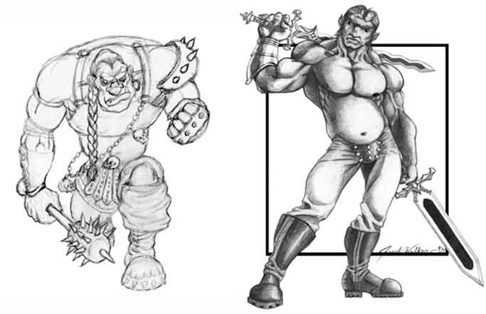

Half-Ogre
Nascono dall'unione, raramente consensuale, tra uomini e orchi (ogre) unendo le caratteristiche di entrambi. Hanno pelle scura che va sul marrone e un corporatura possente. Superano i due metri di altezza ed hanno mantenuto la colorazione degli occhi degli orchi (iride porpora con pupilla bianca). Spesso hanno la mascella molto sviluppata e grossi canini giallastri che sporgono dalla bocca.

Limiti
di classe per la razza:
Fighter 12° livello
Cleric
(Azatar, Forze
della Natura)
Adoratore del Sangue 9° livello
Possibilità di multi-classe:
Nessuna
Allineamenti consentiti:
Qualsiasi non good
Categorie di età :
Base Age 15 + 1d4
Childhood
1-15 years
Adolescence
16-20 years
Adulthood
21-44 years
Middle Age* 45-59 years
Old Age**
60-89 years
Venerable Age***
90 + years
Maximum
Age
90 + 1d20 years
Dimensioni e peso :
Si considerano creature Large, quindi ottengono un bonus di +2 punti ferita a dado vita/livello e la loro iniziativa di movimento è pari a +6 (+3 iniziativa di mezzo movimento). Le loro corazze hanno un costo ed un peso maggiorato del +20%.
Sono alti 200 (le femmine 190) + 2d20 cm. e
pesano 130 (le femmine 120) + 3d10 kg.
Punteggi di Abilità :
Bonus:
+ 1 forza, + 1
costituzione
Malus: – 2 intelligenza, – 2 carisma
Inoltre i limiti minimi e massimi sono i seguenti :
|
Abilità |
Punteggio Minimo
Razziale |
Punteggio Massimo
Razziale |
|
Forza |
14 |
18 |
|
Intelligenza |
3 |
12 |
|
Saggezza |
3 |
1 |
|
Costituzione |
14 |
19 |
|
Carisma |
3 |
9 |
|
Destrezza |
3 |
12 |
Caratteristiche speciali :
Impugnare armi di grandi dimensioni : I mezzi orchi possono usare armi a due mani con una sola mano ad eccezione delle polearm e delle armi che richiedono due mani per essere azionate, si pensi ad una balestra pesante.
Resistenza
agli sforzi fisici: Essendo creature molto resistenti alla fatica fisica
ottengono gratuitamente la competenza "endurance".
Appetito
Bestiale: Essendo creature di dimensioni Large devono mangiare una
quantità tripla di cibo giornaliero rispetto ad un umano medio.
Gli
Half Ogre devono raggiungere un ammontare di punti esperienza pari al 115%
di quelli che dovrebbero normalmente raggiungere per la classe scelta..